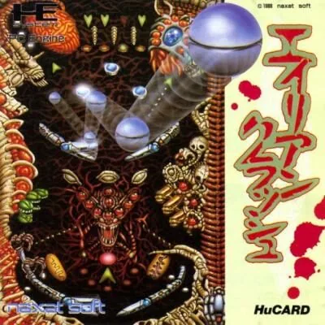
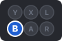
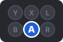
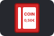
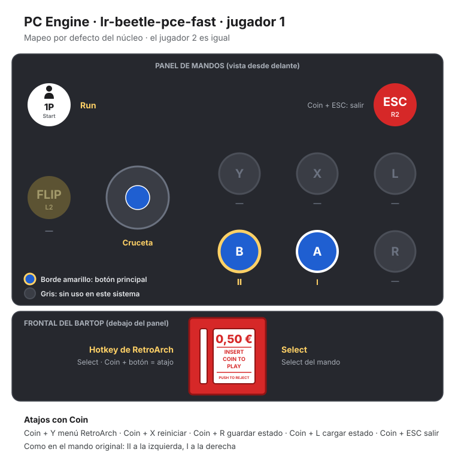

PC Engine
Alien Crush
- Año: 1989
- Desarrollador: NEC Avenue
- Género: Pinball
- Jugadores: 1 jugador
Alien Crush es un pinball de vídeo de temática alienígena. Los gráficos se parecen mucho al arte de las películas de «Alien», y todo tiene un aspecto oscuro y siniestro.
La mesa principal ocupa dos pantallas de alto. Desde la pantalla superior se accede al menos a 3 juegos de bonificación, que consisten en derribar dianas móviles en una mesa aparte de una sola pantalla. La mesa principal también tiene muchas dianas móviles y bloqueos de bola.
Controles
Mando de PC Engine: dos botones.
| Panel | Juego |
|---|---|
 | II |
 | I |
| Run | |
 | Select |
| + | Salir del juego |
El panel en PC Engine


Longplay

Partida de la versión PC Engine (39 min), de World-of-Longplays: PC Engine Longplay [002] Alien Crush.